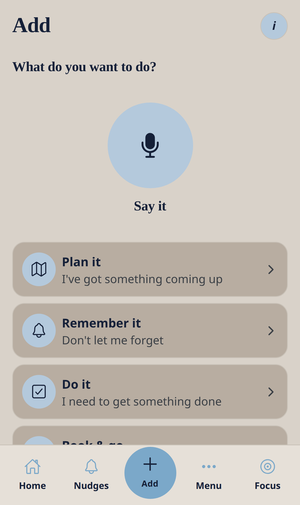
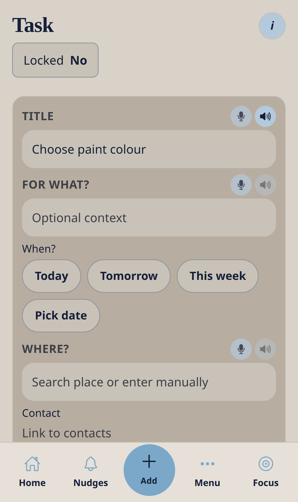

Core module — no Ready4 pack required
Add
Say it, pick one of six everyday paths, or Something else. Packs only add extra choices after install.
Nudge me Ready v3 · 0.3.1 · Round Add button in the tab bar.


Workflow
- Tap Add.
- Say it — for example, remind me to take the bins out tomorrow evening.
- If you said what and when, it saves straight away.
- Or pick Plan it, Remember it, Do it, Book & go, Buy & pay, or Life & people.
- Or tap Something else and type in your own words.
- The first save may ask to turn on quiet phone reminders.
Good to know
- The six paths work with no Ready4 pack.
- Wedding, moving, baby and other pack choices stay hidden until that pack is installed.